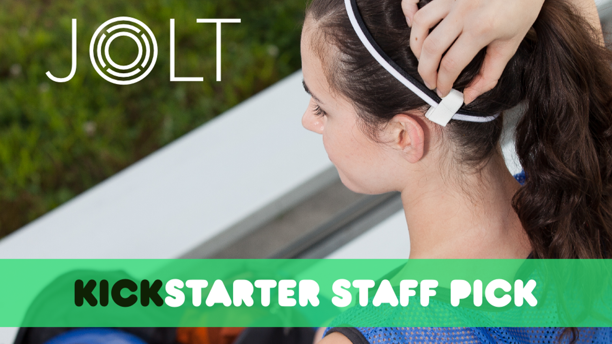

Jolt Sensor - Meilleure détection des commotions cérébrales pour les jeunes athlètes
Le capteur Jolt surveille les impacts de la tête d'un athlète en temps réel, diffusant des données en direct et des alertes vers les smartphones connectés.

Capteur d'impact de tête multi-sport Jolt Sensor
Cordon de chargement micro USB
Applications iPhone et Android gratuites
Généralement expédié sous 2 à 3 jours ouvrables
99.00$
Caractéristiques:
Alertes en Temps Réel
Lorsqu'un impact significatif est détecté, le capteur de secousse vibre pour alerter le joueur et envoie une alerte aux parents et aux entraîneurs pour retirer l'athlète du jeu pour évaluation.
Multi-Sport Compatibilité
Les commotions cérébrales se produisent dans tous les sports. C'est pourquoi le Jolt Sensor est conçu pour tous. Il fonctionne avec un casque, un bandeau ou tout autre élément porté sur la tête.
Une batterie à long durée de vie
Le Jolt Sensor dure plus longtemps que les produits similaires avec une autonomie de plus d'un mois sur une seule charge. Et cela vous rappelle quand il est temps de recharger.
Synchronisation sans fil longue portée
Le capteur est en communication constante avec l'application, avec une portée de plus de 200 mètres. Et l'application peut gérer la communication avec une équipe entière de capteurs.
Évaluation et suivi des symptômes
L'application capture les symptômes d'un joueur identifiés dans l'évaluation de la ligne de touche, ainsi que la décision de retourner jouer, de le garder sur le banc ou de consulter un médecin.
Récupération guidée
L'application se connecte automatiquement après quelques jours pour voir si une commotion cérébrale a été diagnostiquée. Et cela se poursuit avec un suivi quotidien pour suivre les symptômes jusqu'à ce qu'ils disparaissent.
Specifications:
Taille poids
10 x 36 x 18 mm, pèse 7 grammes
Matériaux
Coque en polycarbonate résistant aux chocs avec surmoulage en caoutchouc souple
La batterie
Batterie lithium-ion polymère rechargeable de 25 mAh
Durée de la batterie
Plus de 1 mois d'autonomie de la batterie en utilisation standard
Moyen de Chargement
Port micro-USB et câble de chargement micro-USB inclus
Bluetooth
Bluetooth Smart (Bluetooth 4.0)
Gamme de diffusion
Jusqu'à 200 mètres
Compatibilité BiOS Bluetooth
Application compatible avec iPhone 4+ exécutant iOS 6.1.3+
Compatibilité Android
Appareils avec Bluetooth Smart exécutant Android 5.0.0+